MELSEC iQ-F series Option

- Extension power supply module
- Connector conversion module
- Connector conversion adapter
- Extension cable
- Bus conversion module
- Terminal modules
- SD memory card module
- SD memory card
- Battery
- Cable
Extension power supply module
| Model | Specifications | Compatible CPU module | ||||
|---|---|---|---|---|---|---|
| FX5U | FX5UC | FX5UJ | FX5S | |||
| 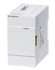 | FX5-1PSU-5V | Power supply for FX5 extension module Internal 5 V DC: 1.2 A *1 Internal 24 V DC: 0.3 A *1 |
○ (AC power supply type) Up to 2 modules *3 |
× | ○ (AC power supply type) Up to 1 module |
× |
| 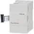 | FX3U-1PSU-5V | Power supply for FX3 extension module Internal 5 V DC: 1 A *1 Internal 24 V DC: 0.3 A *1 |
*2 ○ (AC power supply type) Up to 2 modules *3 |
× | × | × |
| 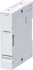 | FX5-C1PS-5V | Power supply for FX5 extension module ［Output current］ 5 V DC: 1200 mA *1 24 V DC: 625 mA *1 |
*4 |
○ Up to 2 modules |
*4 |
× |
- *1Maximum output current depends on the ambient temperature.
- *2When connecting to FX5U, FX5-CNV-BUS or FX5-CNV-BUSC is required. Select one according to the system configuration.
- *3Max. of total two FX5-1PSU-5V and FX3U-1PSU-5V can be connected in one system.
- *4When connecting to FX5U or FX5UJ, FX5-CNV-IF is required.
Connector conversion module
| Model | Specifications | Compatible CPU module | ||||
|---|---|---|---|---|---|---|
| FX5U | FX5UC | FX5UJ | FX5S | |||
| 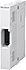 | FX5-CNV-IF | Connector conversion module used from FX5 (extension cable type) to connect FX5 (extension connector type) extension modules. Control power: not consumed |
○ Up to 1 module |
× | ○ Up to 1 module |
× |
| 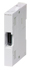 | FX5-CNV-IFC | Connector conversion module used from FX5 (extension connector type) to connect FX5 (extension cable type) extension modules. Control power: not consumed |
× | ○ Up to 1 module |
× | × |
Connector conversion adapter
| Model | Specifications | Compatible CPU module | ||||
|---|---|---|---|---|---|---|
| FX5U | FX5UC | FX5UJ | FX5S | |||
| 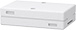 | FX5-CNV-BC | Connector conversion adapter | ○ Up to 1 module |
○ Up to 1 module |
○ Up to 1 module |
× |
Extension cable
| Model | Length | Application | Compatible CPU module | ||||
|---|---|---|---|---|---|---|---|
| FX5U | FX5UC | FX5UJ | FX5S | ||||
| 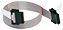 | FX5-30EC | 0.3 m | Extension cable for extension module | ○ Up to 1 module |
○ Up to 1 module |
○ Up to 1 module |
× |
| FX5-65EC | 0.65 m | ||||||
Bus conversion module
| Model | Specifications | Compatible CPU module | ||||
|---|---|---|---|---|---|---|
| FX5U | FX5UC | FX5UJ | FX5S | |||
| 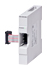 | FX5-CNV-BUS | Bus conversion FX5 (extension cable type) -> FX3 extension Control power: 5 V DC 150 mA (supplied from PLC) |
○ Up to 1 module |
*1 ○ Up to 1 module |
× | × |
| 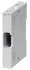 | FX5-CNV-BUSC | Bus conversion FX5 (extension connector type) -> FX3 extension Control power: 5 V DC 150 mA (supplied from PLC) |
*2 ○ Up to 1 module |
○ Up to 1 module |
× | × |
- *1FX5-CNV-IFC or FX5-C1PS-5V is necessary to connect to FX5UC.
- *2FX5-CNV-IF is necessary to connect to FX5U.
Terminal modules
Terminal modules are used to convert connector-type I/O terminals into terminal blocks.
By using terminal blocks (built-in element type) dedicated to input or output, capturing of AC input signals and format conversion into the relay/transistor/triac output can be performed.
| Model | No. of input points |
No. of output points |
Function | |
|---|---|---|---|---|
| 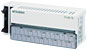 | FX-16E-TB To be discontinued |
16 input points or 16 output points | Directly connected to the I/O terminal of PLC. Using this unit instead of a terminal block or relaying a wiring of I/O device located remotely from PLC enables reducing of the man-hours of I/O wiring. |
|
| FX-16E-TB/UL To be discontinued |
||||
| 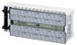 | FX-32E-TB To be discontinued |
32 input points, 32 output points, or 16 input points and 16 output points |
||
| FX-32E-TB/UL To be discontinued |
||||
| 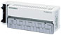 | FX-16EYR-TB To be discontinued |
- | 16 points | Relay output type |
| FX-16EYR-ES-TB/UL To be discontinued |
||||
| FX-16EYS-TB To be discontinued |
Triac output type | |||
| FX-16EYS-ES-TB/UL To be discontinued |
||||
| FX-16EYT-TB To be discontinued |
Transistor output type (sink) | |||
| FX-16EYT-ES-TB/UL To be discontinued |
||||
| FX-16EYT-ESS-TB/UL To be discontinued |
Transistor output type (source) | |||
SD memory card module
| Model | Specifications | Compatible CPU module | ||||
|---|---|---|---|---|---|---|
| FX5U | FX5UC | FX5UJ | FX5S | |||
| 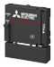 | FX5-SDCD | SD memory card module | × | × | × | ○ Up to 1 module |
SD memory card
| Model | Specifications | Compatible CPU module | |||||
|---|---|---|---|---|---|---|---|
| Type | Capacity | Number of writes | FX5U | FX5UC | FX5UJ | FX5S | |
| NZ1MEM-2GBSD | SD memory card | 2G bytes | 60,000 times | ○ Up to 1 module |
○ Up to 1 module |
○ Up to 1 module |
*1 ○ Up to 1 module |
| NZ1MEM-4GBSD | SDHC memory card | 4G bytes | 100,000 times | ||||
| NZ1MEM-8GBSD | 8G bytes | ||||||
| NZ1MEM-16GBSD | 16G bytes | ||||||
- *1FX5-SDCD is separately required.
Battery
| Model | Application | Compatible CPU module | ||||
|---|---|---|---|---|---|---|
| FX5U | FX5UC | FX5UJ | FX5S | |||
| 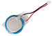 | FX3U-32BL | The battery will be used when you desire to retain (latch) * the status of the device memory or clock data before a power failure. At the time of delivery from a plant, the battery is not built in the CPU module. Please make arrangements if required. |
○ Up to 1 module |
○ Up to 1 module |
× | × |
- *Setting of parameter is required for a power failure retention.
Cable
| Model | Length | Application | Compatible CPU module | ||||
|---|---|---|---|---|---|---|---|
| FX5U | FX5UC | FX5UJ | FX5S | ||||
 |
FX-232CAB-1 | 3.0 m | Use a communication cable to connect a PLC with a personal computer by RS-232C communication. FX5-232ADP < − > Personal computer FX5-232-BD * < − > Personal computer |
○ | ○ | ○ | ○ |
- *FX5-232-BD can be connected to the FX5U/FX5UJ/FX5S CPU module.